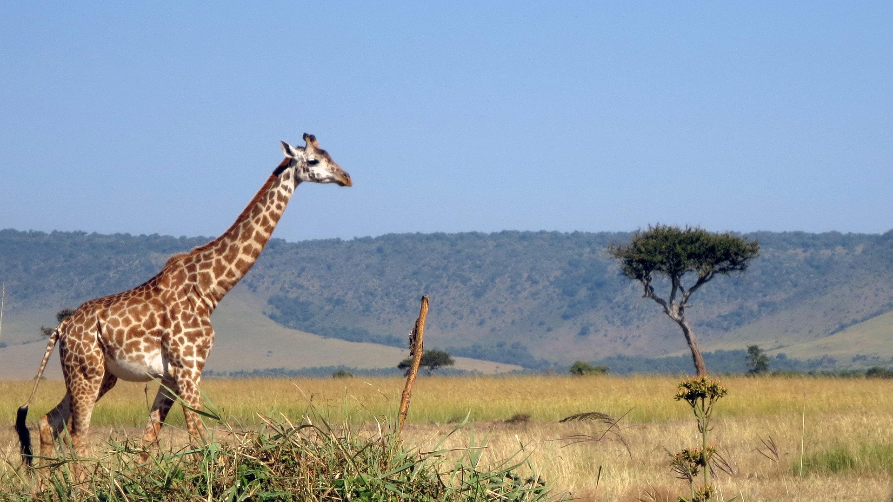

Pirâmides egípcias, Egito
As Pirâmides egípcias são antigas estruturas de pedra construídas
pela civilização do Antigo Egito, principalmente como túmulos para
faraós e suas rainhas. As mais famosas estão localizadas na
Necrópole de Gizé, perto do Cairo, e incluem as pirâmides de Quéops,
Quéfren e Miquerinos.
Deserto do Saara
O Deserto do Saara é o maior deserto quente do mundo, cobrindo
grande parte do Norte da África. Com uma área de aproximadamente 9,2
milhões de quilômetros quadrados, é conhecido por suas vastas dunas
de areia, temperaturas extremas e uma variedade de ecossistemas. O
Saara é lar de diversas tribos nômades e animais adaptados às
condições áridas. O Deserto do Saara está localizado em vários
países do norte da África. Não é um único país, mas sim uma região
que se estende por partes de Argélia, Chade, Egito, Líbia, Mali,
Mauritânia, Marrocos, Níger, Saara Ocidental, Sudão e Tunísia.
Cabo da Boa Esperança, África do Sul
O Cabo da Boa Esperança é um promontório rochoso na costa atlântica
da Península do Cabo, na África do Sul, conhecido por ser um marco
histórico importante nas rotas marítimas para as Índias. Localizado
aproximadamente 50 km ao sul da Cidade do Cabo, foi descoberto pelo
navegador português Bartolomeu Dias em 1488, que inicialmente o
chamou de Cabo das Tormentas devido às fortes tempestades na região.
Posteriormente, o rei D. João II renomeou-o como Cabo da Boa
Esperança, refletindo a esperança de encontrar uma rota marítima
para a Índia.

Masai Mara, Quênia
Maasai Mara é uma grande reserva nacional de caça no Condado de
Narok, Quênia, contígua ao Parque Nacional do Serengeti, na
Tanzânia. É uma das áreas de preservação da vida selvagem e selvagem
da África, com suas populações de leões, leopardos, chitas e
elefantes-africanos. Também abriga a Grande Migração, que a
consagrou como uma das Sete Maravilhas Naturais da África e como uma
das Dez Maravilhas do Mundo.
